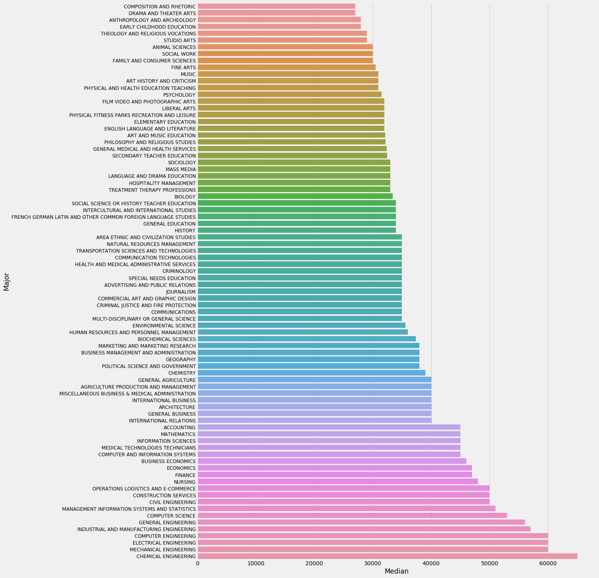
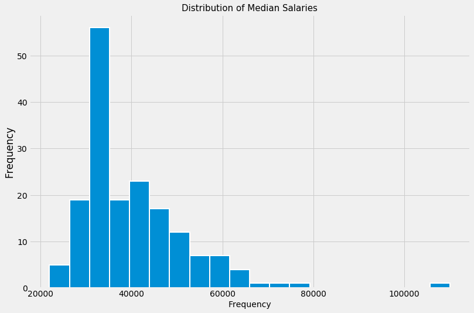
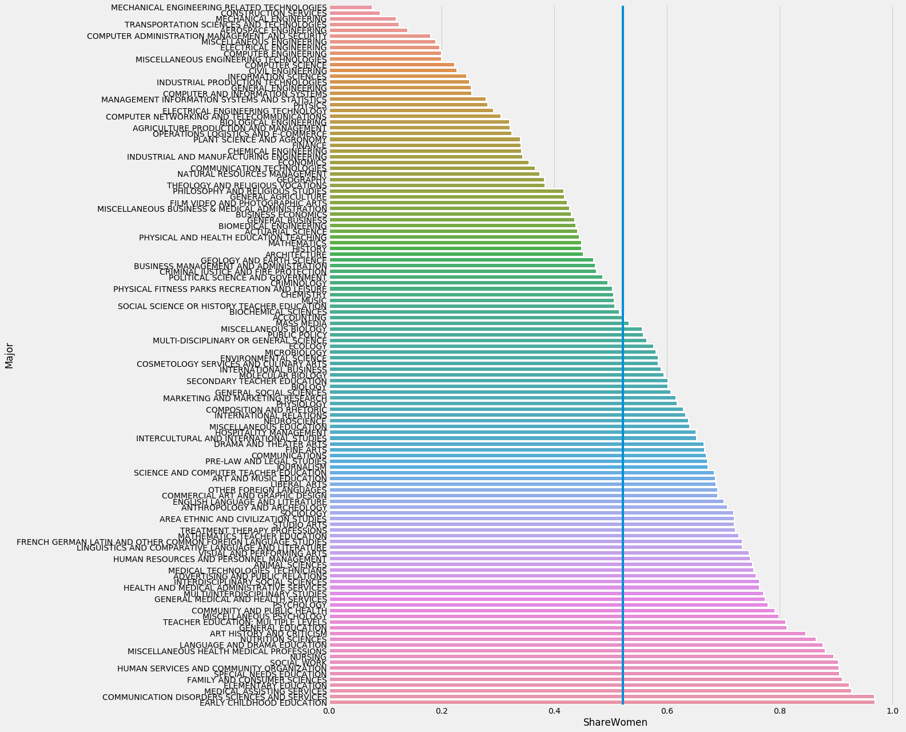
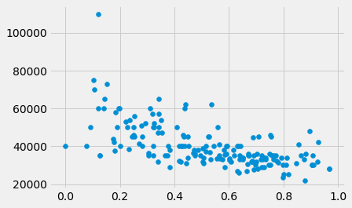

import pandas as pd
import numpy as np
import matplotlib.pyplot as plt
import seaborn as sns
import matplotlibdf = pd.read_csv('fivethirtyeight-college-majors-dataset/recent-grads.csv')matplotlib.style.use("fivethirtyeight")median = df2.sort_values('Median')[['Major', 'Median']]plt.figure(figsize = (16, 24))
plt.yticks( fontsize = 12)
sns.barplot(y = median.Major, x = median.Median)
plt.savefig('graph.png')
median| Major | Median | |
|---|---|---|
| 172 | LIBRARY SCIENCE | 22000 |
| 171 | COUNSELING PSYCHOLOGY | 23400 |
| 169 | EDUCATIONAL PSYCHOLOGY | 25000 |
| 170 | CLINICAL PSYCHOLOGY | 25000 |
| 168 | ZOOLOGY | 26000 |
| ... | ... | ... |
| 4 | CHEMICAL ENGINEERING | 65000 |
| 3 | NAVAL ARCHITECTURE AND MARINE ENGINEERING | 70000 |
| 2 | METALLURGICAL ENGINEERING | 73000 |
| 1 | MINING AND MINERAL ENGINEERING | 75000 |
| 0 | PETROLEUM ENGINEERING | 110000 |
173 rows × 2 columns
plt.figure(figsize = (12,8))
df.Median.plot(kind = 'hist', bins = 20, edgecolor = 'white', linewidth = 2)
plt.title("Distribution of Median Salaries", fontsize = 15)
plt.xlabel("Frequency", fontsize = 14)Text(0.5, 0, 'Frequency')
df2 = df[df['Sample_size'] > 50]
women = df2.sort_values('ShareWomen')[['Major', 'ShareWomen']]
plt.figure(figsize = (16, 21))
sns.barplot(women['ShareWomen'], women['Major'], edgecolor = 'white', linewidth = 2)
plt.axvline(x = 0.522)<matplotlib.lines.Line2D at 0x7f8c298a6cd0>
df.ShareWomen.mean()0.5222233649593027df| Rank | Major_code | Major | Total | Men | Women | Major_category | ShareWomen | Sample_size | Employed | ... | Part_time | Full_time_year_round | Unemployed | Unemployment_rate | Median | P25th | P75th | College_jobs | Non_college_jobs | Low_wage_jobs | |
|---|---|---|---|---|---|---|---|---|---|---|---|---|---|---|---|---|---|---|---|---|---|
| 0 | 1 | 2419 | PETROLEUM ENGINEERING | 2339.0 | 2057.0 | 282.0 | Engineering | 0.120564 | 36 | 1976 | ... | 270 | 1207 | 37 | 0.018381 | 110000 | 95000 | 125000 | 1534 | 364 | 193 |
| 1 | 2 | 2416 | MINING AND MINERAL ENGINEERING | 756.0 | 679.0 | 77.0 | Engineering | 0.101852 | 7 | 640 | ... | 170 | 388 | 85 | 0.117241 | 75000 | 55000 | 90000 | 350 | 257 | 50 |
| 2 | 3 | 2415 | METALLURGICAL ENGINEERING | 856.0 | 725.0 | 131.0 | Engineering | 0.153037 | 3 | 648 | ... | 133 | 340 | 16 | 0.024096 | 73000 | 50000 | 105000 | 456 | 176 | 0 |
| 3 | 4 | 2417 | NAVAL ARCHITECTURE AND MARINE ENGINEERING | 1258.0 | 1123.0 | 135.0 | Engineering | 0.107313 | 16 | 758 | ... | 150 | 692 | 40 | 0.050125 | 70000 | 43000 | 80000 | 529 | 102 | 0 |
| 4 | 5 | 2405 | CHEMICAL ENGINEERING | 32260.0 | 21239.0 | 11021.0 | Engineering | 0.341631 | 289 | 25694 | ... | 5180 | 16697 | 1672 | 0.061098 | 65000 | 50000 | 75000 | 18314 | 4440 | 972 |
| ... | ... | ... | ... | ... | ... | ... | ... | ... | ... | ... | ... | ... | ... | ... | ... | ... | ... | ... | ... | ... | ... |
| 168 | 169 | 3609 | ZOOLOGY | 8409.0 | 3050.0 | 5359.0 | Biology & Life Science | 0.637293 | 47 | 6259 | ... | 2190 | 3602 | 304 | 0.046320 | 26000 | 20000 | 39000 | 2771 | 2947 | 743 |
| 169 | 170 | 5201 | EDUCATIONAL PSYCHOLOGY | 2854.0 | 522.0 | 2332.0 | Psychology & Social Work | 0.817099 | 7 | 2125 | ... | 572 | 1211 | 148 | 0.065112 | 25000 | 24000 | 34000 | 1488 | 615 | 82 |
| 170 | 171 | 5202 | CLINICAL PSYCHOLOGY | 2838.0 | 568.0 | 2270.0 | Psychology & Social Work | 0.799859 | 13 | 2101 | ... | 648 | 1293 | 368 | 0.149048 | 25000 | 25000 | 40000 | 986 | 870 | 622 |
| 171 | 172 | 5203 | COUNSELING PSYCHOLOGY | 4626.0 | 931.0 | 3695.0 | Psychology & Social Work | 0.798746 | 21 | 3777 | ... | 965 | 2738 | 214 | 0.053621 | 23400 | 19200 | 26000 | 2403 | 1245 | 308 |
| 172 | 173 | 3501 | LIBRARY SCIENCE | 1098.0 | 134.0 | 964.0 | Education | 0.877960 | 2 | 742 | ... | 237 | 410 | 87 | 0.104946 | 22000 | 20000 | 22000 | 288 | 338 | 192 |
173 rows × 21 columns
plt.scatter(df['ShareWomen'], df['Median'], )<matplotlib.collections.PathCollection at 0x7f8bc84e7710>
len(df[df['Sample_size'] > 50])122df| Rank | Major_code | Major | Total | Men | Women | Major_category | ShareWomen | Sample_size | Employed | ... | Part_time | Full_time_year_round | Unemployed | Unemployment_rate | Median | P25th | P75th | College_jobs | Non_college_jobs | Low_wage_jobs | |
|---|---|---|---|---|---|---|---|---|---|---|---|---|---|---|---|---|---|---|---|---|---|
| 0 | 1 | 2419 | PETROLEUM ENGINEERING | 2339.0 | 2057.0 | 282.0 | Engineering | 0.120564 | 36 | 1976 | ... | 270 | 1207 | 37 | 0.018381 | 110000 | 95000 | 125000 | 1534 | 364 | 193 |
| 1 | 2 | 2416 | MINING AND MINERAL ENGINEERING | 756.0 | 679.0 | 77.0 | Engineering | 0.101852 | 7 | 640 | ... | 170 | 388 | 85 | 0.117241 | 75000 | 55000 | 90000 | 350 | 257 | 50 |
| 2 | 3 | 2415 | METALLURGICAL ENGINEERING | 856.0 | 725.0 | 131.0 | Engineering | 0.153037 | 3 | 648 | ... | 133 | 340 | 16 | 0.024096 | 73000 | 50000 | 105000 | 456 | 176 | 0 |
| 3 | 4 | 2417 | NAVAL ARCHITECTURE AND MARINE ENGINEERING | 1258.0 | 1123.0 | 135.0 | Engineering | 0.107313 | 16 | 758 | ... | 150 | 692 | 40 | 0.050125 | 70000 | 43000 | 80000 | 529 | 102 | 0 |
| 4 | 5 | 2405 | CHEMICAL ENGINEERING | 32260.0 | 21239.0 | 11021.0 | Engineering | 0.341631 | 289 | 25694 | ... | 5180 | 16697 | 1672 | 0.061098 | 65000 | 50000 | 75000 | 18314 | 4440 | 972 |
| ... | ... | ... | ... | ... | ... | ... | ... | ... | ... | ... | ... | ... | ... | ... | ... | ... | ... | ... | ... | ... | ... |
| 168 | 169 | 3609 | ZOOLOGY | 8409.0 | 3050.0 | 5359.0 | Biology & Life Science | 0.637293 | 47 | 6259 | ... | 2190 | 3602 | 304 | 0.046320 | 26000 | 20000 | 39000 | 2771 | 2947 | 743 |
| 169 | 170 | 5201 | EDUCATIONAL PSYCHOLOGY | 2854.0 | 522.0 | 2332.0 | Psychology & Social Work | 0.817099 | 7 | 2125 | ... | 572 | 1211 | 148 | 0.065112 | 25000 | 24000 | 34000 | 1488 | 615 | 82 |
| 170 | 171 | 5202 | CLINICAL PSYCHOLOGY | 2838.0 | 568.0 | 2270.0 | Psychology & Social Work | 0.799859 | 13 | 2101 | ... | 648 | 1293 | 368 | 0.149048 | 25000 | 25000 | 40000 | 986 | 870 | 622 |
| 171 | 172 | 5203 | COUNSELING PSYCHOLOGY | 4626.0 | 931.0 | 3695.0 | Psychology & Social Work | 0.798746 | 21 | 3777 | ... | 965 | 2738 | 214 | 0.053621 | 23400 | 19200 | 26000 | 2403 | 1245 | 308 |
| 172 | 173 | 3501 | LIBRARY SCIENCE | 1098.0 | 134.0 | 964.0 | Education | 0.877960 | 2 | 742 | ... | 237 | 410 | 87 | 0.104946 | 22000 | 20000 | 22000 | 288 | 338 | 192 |
173 rows × 21 columns
NameError: name 'df' is not definedimport numpy as np??np.random.hypergeometricd = np.random.hypergeometric(15, 15, 15, 10000000)(d >= 12).mean() + (d <= 3).mean()0.0028357